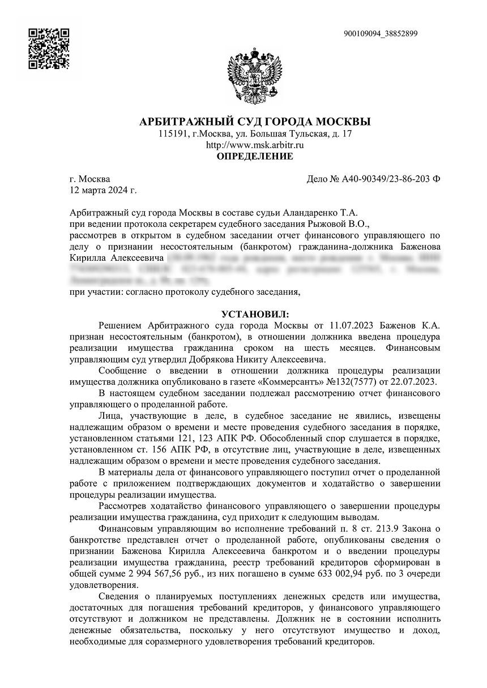
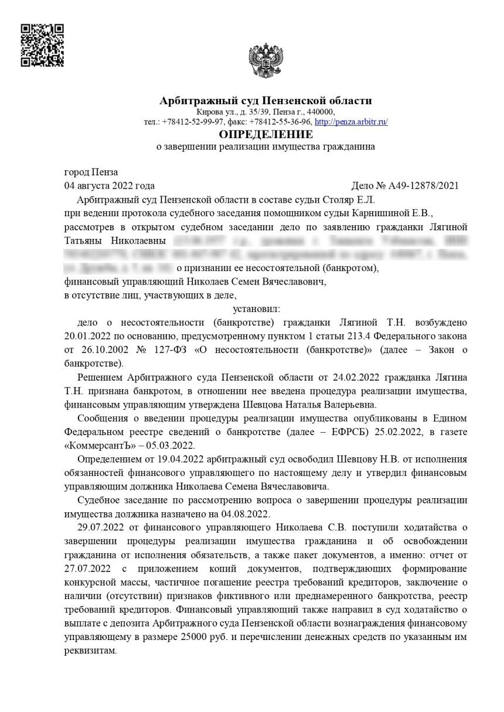
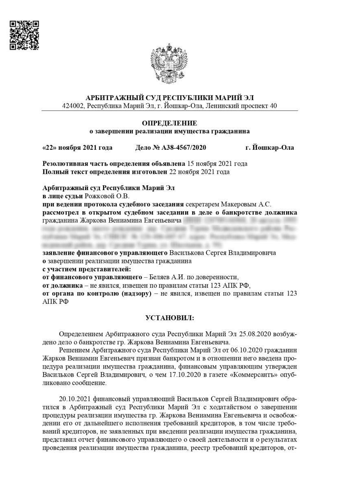
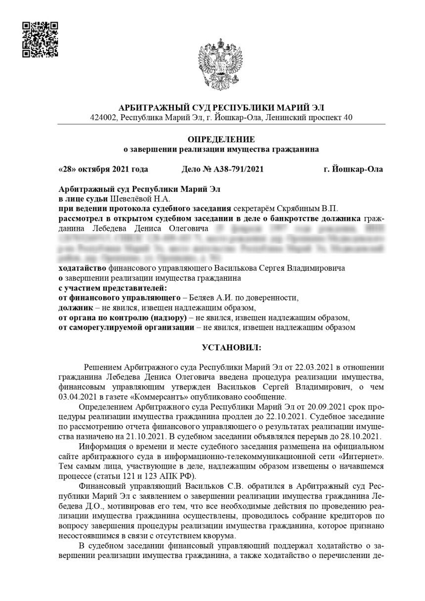
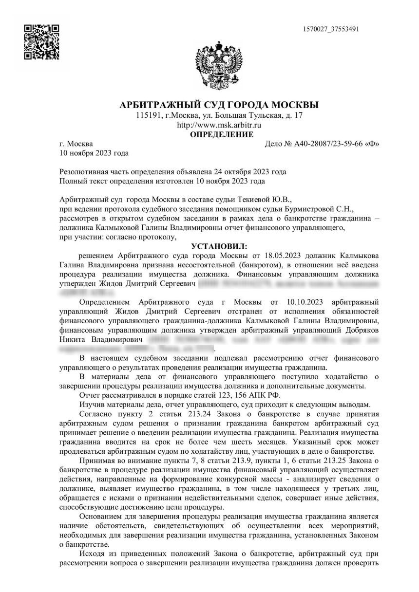
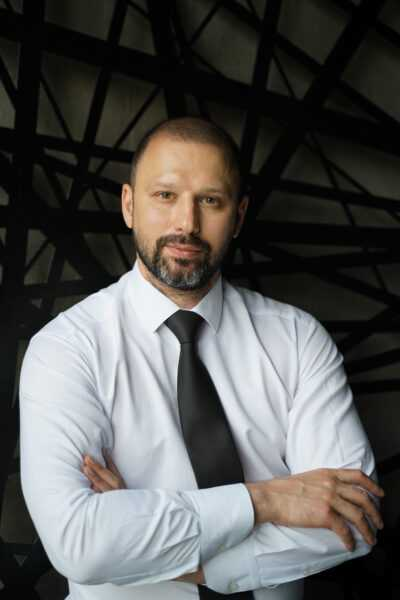

Рассрочка 0% на все время процедуры
Порядок платежей и сроки фиксируем до начала работы.
Разберём вашу ситуацию и объясним, какие решения доступны. Оценим риски для имущества и семьи до начала процедуры — спокойно, по делу и без обещаний невозможного.
Стоимость услуг, рассрочка и обязательства команды закрепляются в договоре.
завершённых дел по банкротству
сумма списанных долгов по данным компании
Обсуждаем возможности, расходы и риски заранее. Все условия сопровождения можно прочитать до подписания договора.
Порядок платежей и сроки фиксируем до начала работы.
Закрепляем конкретные обязательства команды по сопровождению дела.
Стоимость юридических услуг известна заранее; обязательные расходы обсуждаем отдельно.
Консультируем дистанционно, в том числе если вы находитесь за пределами России. Процедура проводится по российскому праву.
Расскажите о долгах, имуществе и вашей цели. Подскажем, что проверить в первую очередь.
Записаться на разговор ↗Обращаться за оценкой можно до того, как проблема станет критической. Начнём с того, что происходит именно у вас.
На обязательные выплаты не хватает дохода, а новые займы не решают проблему.
Несколько кредиторов, штрафы и постоянные звонки мешают спокойно принять решение.
Есть исполнительное производство, удержания из дохода или ограничения по счетам.
Нужно заранее понять, что может произойти с квартирой, автомобилем и общим имуществом.
Пять опубликованных определений арбитражных судов о завершении процедур. Можно открыть оригиналы и изучить документы.

Смотреть акт ↗Сумма долга в опубликованном деле

Смотреть акт ↗Сумма долга в опубликованном деле

Смотреть акт ↗Сумма долга в опубликованном деле

Смотреть акт ↗Сумма долга в опубликованном деле

Смотреть акт ↗Сумма долга в опубликованном деле
Суммы взяты из опубликованных карточек дел. Фактическая сумма прекращённых обязательств может отличаться от общей задолженности в деле; результат каждой процедуры зависит от судебного акта и обстоятельств должника.
На сайте компании опубликованы фотографии специалистов. Вы заранее видите людей, с которыми будете обсуждать свою ситуацию.

Видеоотзывы опубликованы компанией. Откройте ролик и послушайте, как проходило сопровождение у доверителей.
Первый разговор нужен, чтобы понять картину целиком. Вы получите ориентир по возможным действиям и вопросам, которые требуют отдельной проверки.
Бесплатная консультацияКакие долги есть и перед кем
Доходы и исполнительные производства
Имущество, ипотека и интересы семьи
Ранее совершённые сделки и возможные риски
Возможные расходы и порядок дальнейшей работы
Вы понимаете, что происходит на каждом этапе и какие решения предстоит принять.
Собираем основные факты и документы, уточняем вашу цель.
Сравниваем пути, риски для имущества и возможные расходы.
Если выбран путь банкротства, формируем план подготовки и сопровождения.
Помогаем пройти согласованные этапы и отвечаем на вопросы по ходу дела.
Частые опасения заслуживают прямого ответа. Детали всегда зависят от документов и обстоятельств.
О процедуре на сайте ФНСНет. Закон предусматривает долги, от которых банкротство не освобождает, например алименты и требования о возмещении вреда жизни или здоровью. Кроме того, суд оценивает добросовестность должника. Проверим состав ваших обязательств до начала работы.
По общему правилу единственное пригодное для проживания жильё защищено, но с ипотекой и отдельными обстоятельствами связаны важные исключения. Для ответа по вашей квартире нужно изучить документы.
Начать можно дистанционно: по телефону или электронной почте. Формат дальнейших действий зависит от выбранной процедуры и документов; обсудим его при первом обращении.
После бесплатной консультации назовём стоимость юридических услуг и зафиксируем её в договоре. Обязательные расходы по самой процедуре объясним отдельно. Рассрочка на услуги — 0% на все время процедуры.
Расскажите о ситуации. На бесплатной консультации юрист оценит возможные решения и объяснит, что стоит проверить до начала процедуры.
Ежедневно с 10:00 до 19:00